I. London---the Capital of UK
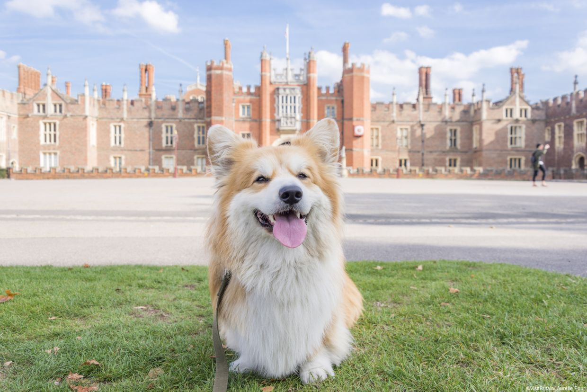
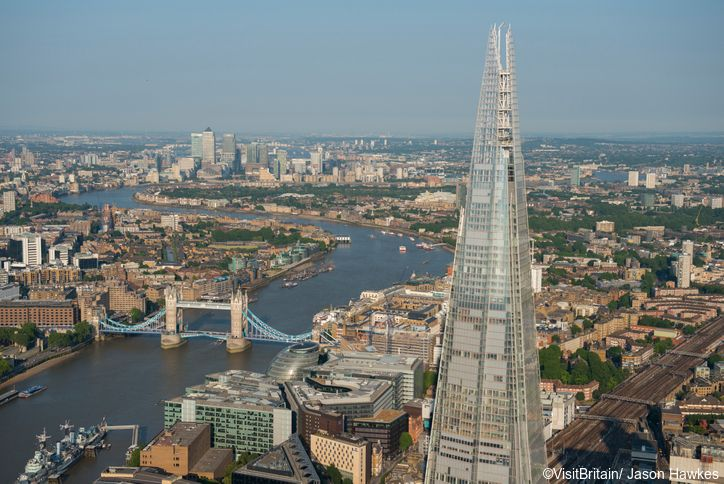
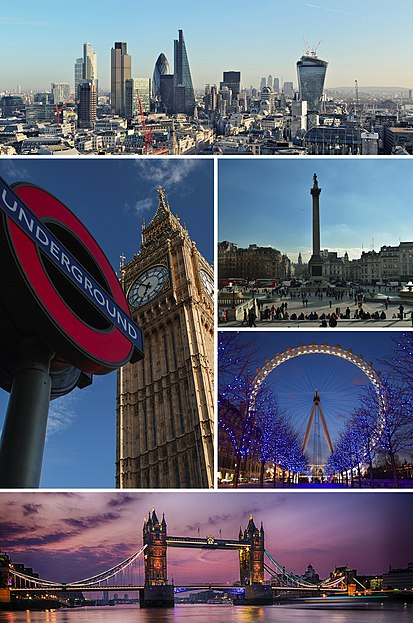
London is the capital of the United Kingdom and England. London is the city region with the highest population in the United Kingdom. With it being located along River Thames, London has been a central city since it was founded by the Romans two millennia ago under the name Londinium. London's original city center, the City of London, which in 2011 had 7,375 inhabitants on an area of 2.9 km虏, is England's smallest city. Since the end of the 19th century, London has also been used for the urban region that has developed around this city center. This area forms the region of London, as well as the Greater London administrative unit, led by the Mayor of London and the London Assembly. In modern times, London is one of the world's most important political, economic and cultural centers. This is not least due to the fact that London was the capital of the British Empire and thus for almost three centuries the center of power for large parts of the globe.
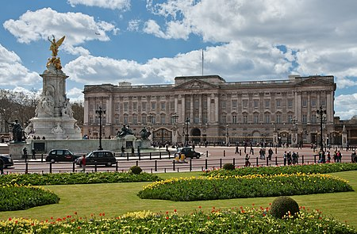
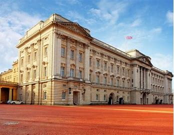
Buckingham Palace is a palace in the City of Westminster, which is part of central London, England in the United Kingdom. It is the official residence where the British monarch lives and works.The palace is a setting for state occasions and royal hospitality, and has been a focus for the British people at times of national rejoicing and crisis.
Buckingham Palace was built in 1703 by John Sheffield, 1st Duke of Buckingham and Normandy, as a townhouse (a residence in London). It was bought by the British royal family in 1761. It became the official London home of the family in 1837 and was greatly expanded in the 19th century. It has 775 rooms, 19 staterooms, and 78 bathrooms. Leading up to it is a ceremonial road called The Mall. It was remodelled in 1913 by Sir Aston Webb.A German bomb damaged the Palace during the London blitz.
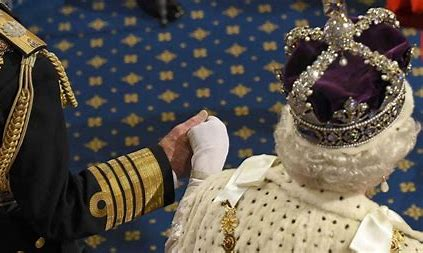
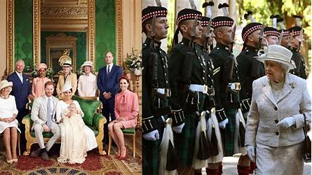
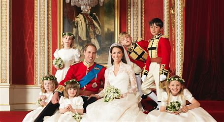
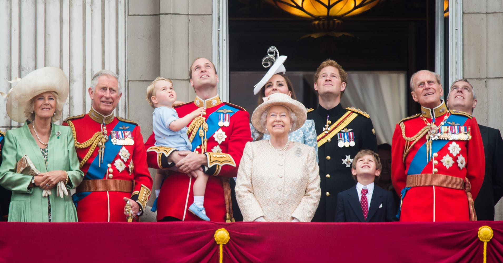
- 1
- 2
- 3
- 4
- 5
| Despite the Tower of London's grim reputation as a place of torture and death, within these walls you will also discover the history of a royal palace, an armoury and a powerful fortress. Don't miss Royal Beasts and learn about the wild and wonderous animals that have inhabited the Tower, making it the first London Zoo. | 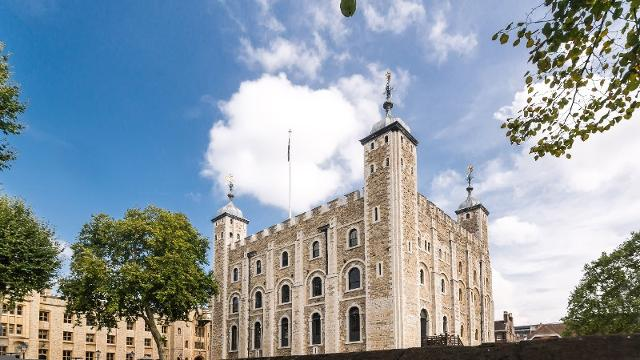 |
Discover the priceless Crown Jewels, join an iconic Beefeater on a tour and hear their bloody tales, stand where famous heads have rolled, learn the legend of the Tower's ravens, storm the battlements, get to grips with swords and armour, and much more! |
II.Leeds(UOL)
|
Leeds is a city in the county of West Yorkshire in the north of England. It is the capital of the county and it's also a city with thick eductaion atmosphere. Leeds has four universities: University of Leeds, Leeds Metropolitan University, Leeds Trinity University and the University of Law. Leeds is on the River Aire. Also, for football fans, the city's football team is Leeds United AFC. (Try to drag the pictures left side!) |

|
Touring in Leeds University of Leeds *University of leedsThe University of Leeds, established in 1904, is one of the largest higher education institutions in the UK. We are renowned globally for the quality of our teaching and research Our strategy sets a blueprint for a values-driven university. One that harnesses its expertise in research and education to help shape a better future for humanity, working through collaboration to tackle inequalities, achieve societal impact and drive change. |
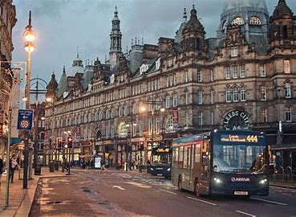 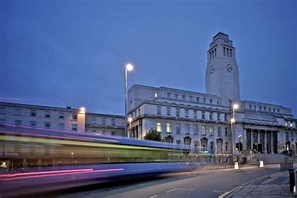 |